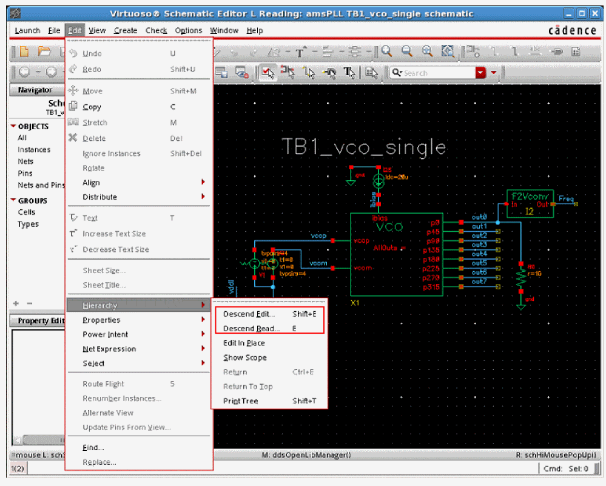
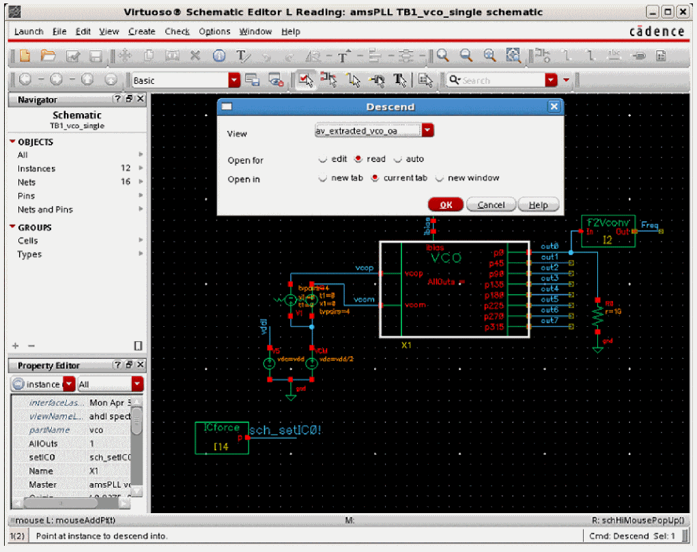
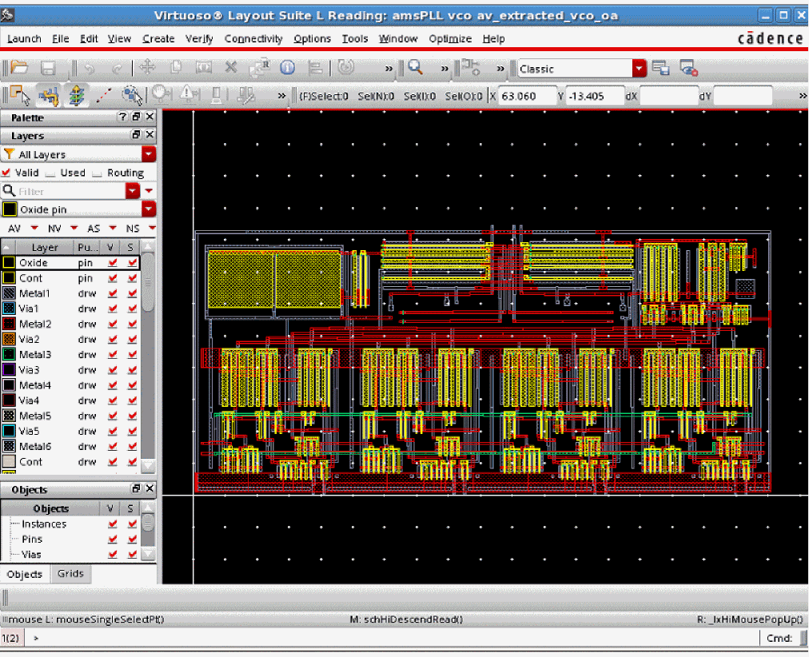
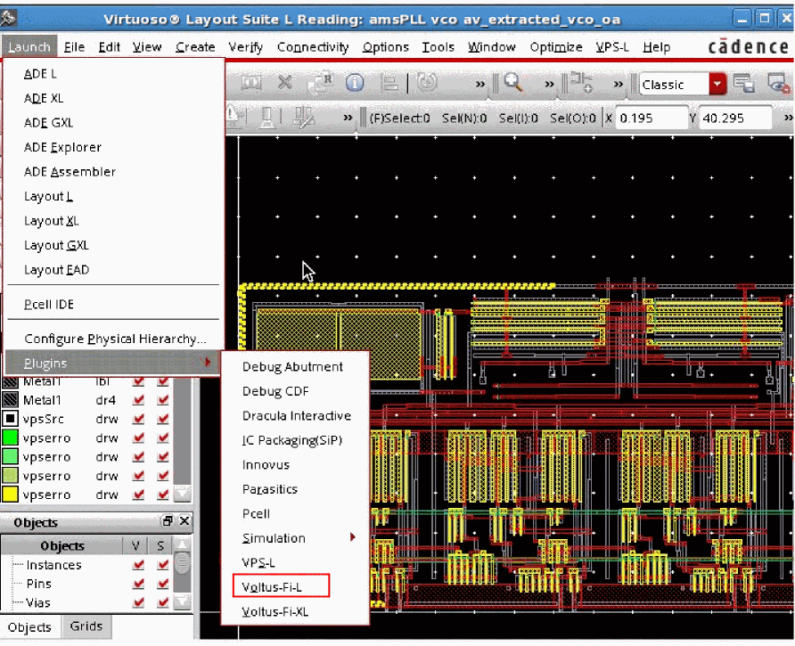
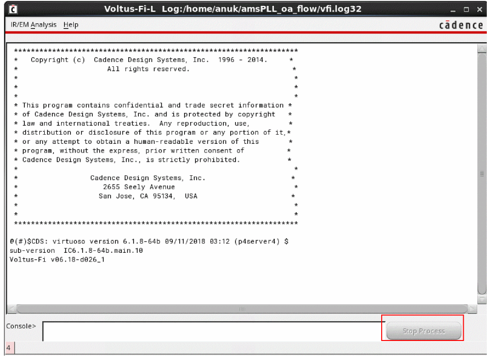

2
Getting Started
- Product and Installation Information
- Supported and Compatible Platform
- Starting the Software
- Running Voltus-Fi-L in Batch Mode
- Running Voltus-Fi-L in the GUI Mode
- Log Files for Voltus-Fi-L
- Accessing Documentation and Help
Product and Installation Information
The Voltus-Fi-L product is launched within the Virtuoso Platform. To use this product, you must have the Virtuoso® ICADVM20.1 release version.
To check whether this product is available in your Virtuoso® Design Environment, type the following in the UNIX window, shell, or xterm:
This prints the product version available in your Virtuoso Design Environment.
For basic information and procedures required to install Cadence® products, see Cadence Installation Guide.
For information about how to configure the Virtuoso® Design Environment, see “Setting up the Virtuoso Software”, in Virtuoso Software Licensing and Configuration User Guide.
Supported and Compatible Platform
Voltus-Fi-L is supported only on the following platform:
Using the CDS_AUTO_64BIT Environment Variable
To run 64-bit versions of all or some applications, complete the following steps before starting the software:
-
If you are using the
lnx86operating system, verify that it supports 64-bit applications. -
Set the
CDS_AUTO_64BITenvironment variable.
For example,
Starting the Software
You can run Voltus-Fi-L interactively from the GUI, or you can execute it as a batch command. For details, see the following sections:
Before running Voltus-Fi-L, ensure that the prerequisites detailed below are met.
PreRequisites for Running Voltus-Fi-L
Ensure that the following are available before running Voltus-Fi-L:
-
A simulation run using either the
vavo-dbor thePSFdata. -
Parasitic resistance and capacitance from the power and ground nets, performed to create an extracted view of the design using Quantus QRC.For more information, see the “IR/EM Analysis Flow” chapter.
-
An EM rule file that contains the EM reliability rules that need to be specified for EM analysis. For example, the rule specifying different current limits with respect to width, length, and temperature. These rules are specified in the technology file. This is required only for EM analysis. For more information about specifying the EM rules, see the “EM Rules Specification” chapter.
Running Voltus-Fi-L in Batch Mode
Voltus-Fi-L can be run as a batch command, which means it runs from Virtuoso in a no-graph mode. Batch mode is typically used to perform the initial pass or fail analysis of the design’s power-grid networks.
After running the analysis in batch mode, use the interactive GUI to view and analyze the results of the analysis.
For details of running Voltus-Fi-L in the batch mode, see the “Batch Mode Execution” chapter.
The details of running Voltus-Fi-L in the GUI mode are provided below.
Running Voltus-Fi-L in the GUI Mode
This section covers the details of how to run Voltus-Fi in the GUI mode including all the data requirements. The following topics are covered in this section:
Data Requirements for the GUI Flow
The following inputs are required for running the extracted view flow in the GUI mode:
-
Simulation directory – specifies the path of the Spectre simulation directory containing the
vavo_dbdatabase or thePSFdatabase. -
qrcTechFile/ICTfile oremDataFile– specifies the path of the Quantus QRC tech file/ICT file/emDataFile. - QRC directory – specifies the location of the Quantus QRC run.
- QRC run name – specifies the Quantus QRC run name.
-
Layermap file (optional) – specifies the layermap file that provides the mapping between the layer names in the simulation database to the layer names in the technology file. If not specified, the tool assumes that the layer names are same.
- Hierarchy (optional) – specifies the hierarchy name.
- Pres_cell name (optional) – specifies the presistor cell name.
Launching Voltus-Fi-L from Virtuoso Schematic Editor L
Before viewing the IR drop and EM analysis results in the Voltus-Fi-L GUI, you will be performing the following tasks:
- Starting the Virtuoso Design Environment
- Using the CIW to Open the Virtuoso Schematic Editor L
- Descending into Design Hierarchy
- Launching Voltus-Fi-L
Starting the Virtuoso Design Environment
Once you have set up the Virtuoso Design Environment, you can start Virtuoso by typing the following in the unix, shell, or xterm window:
The Command Interpreter Window (CIW) opens. You interact with the design environment from the CIW.
Figure 2-1 Command Interpreter Window (CIW)
The title bar of the CIW contains the following information:
-
The name of the workbench you are running (for example,
Virtuoso). - The path to the log file (CDS.log) that records the ongoing events of the design session. The content of the log file is displayed in the output area.
Using the CIW to Open the Virtuoso Schematic Editor L
You can use the CIW to open the schematic view of the design you want to analyze. From the Main menu, you can either use the Tools menu or the File menu to access your design.
Using the File Menu
For information about how to open the schematic view of Virtuoso from the File menu in the CIW, see, “
Using the Tools Menu
To open the schematic view of the design from the Tools menu, choose Tools – Library Manager. This is shown below.
Figure 2-2 Command Interpreter Window – Opening the Library Manager Form
The Library Manager form opens. This is shown below.
Figure 2-3 Library Manager Form
For more information on the Library Manager, see the Cadence Library Manager User Guide.
Opening a Schematic View in the Library Manager
In the Library Manager form, you can choose to display library information (library, cell, view, file, category) using either list boxes (in View – Lists mode) or a hierarchical tree structure (in View - Tree mode).
The information provided below is for Views – Lists mode.
To select a library and its corresponding cell and view on the Library Manager form, click the item names in the order: Library, Cell, and View. You can select a specific item that is not visible in the list box by typing the first part of the name in the active field at the top of the list box. As you type, the list scrolls to any matching names.
Once you have selected the schematic view, doubleclick the view to open the design in Virtuoso® Schematic Editor L. This is shown below.
Figure 2-4 Virtuoso Schematic Editor – Displaying the Design
You can also open the schematic view of the design by using the SKILL function,
Descending into Design Hierarchy
In the Schematic Editor, before you run Voltus-Fi-L, you need to descend into the design hierarchy. A design hierarchy consists of many levels of a single design. When you descend into the design hierarchy, you view the extracted layout of the design you want to analyze.
You can descend into the design by using the SKILL function,
In the GUI, to descend into the design hierarchy, follow these steps:
-
In the Virtuoso Schematic Editor L, choose Edit – Hierarchy – and Descend Read. Choose the Descend Edit option to make any change in the extracted layout.
Figure 2-5 Virtuoso Schematic Editor L – Descending into Design HierarchyFigure 2-6 Descend Form – Selecting the Design View -
In this form, select the name of the extracted view from the options provided in the View cyclic field. In the example shown in the figure above, the extracted view is
av_extracted_vco_oa. - Click read to open the extracted view for reading. You can select edit if you want to modify something in the extracted view.
- Choose where you want to open the extracted view by selecting Open in – new tab, current tab, or new window.
- Click OK.
-
The selected view of the instance opens in Virtuoso® Layout Suite L. This is shown in the figure below.
Figure 2-7 Virtuoso Layout Suite L – Displaying the Selected Design View
Launching Voltus-Fi-L
After opening the detailed view of the selected instance of the design, open the Voltus-Fi-L GUI from the Main menu of the Virtuoso® Layout Suite by performing the following steps:
-
Choose Launch – Plugins – Voltus-Fi-L. This is shown below.
Figure 2-8 Running Voltus-Fi-L from the Layout Suite -
The Voltus-Fi-L console opens. This is shown below.
Figure 2-9 The Voltus-Fi-L Console - The following main menus of Voltus-Fi-L are available:
Log Files for Voltus-Fi-L
When you run Voltus-Fi-L either in the GUI or in the batch mode, a standalone log file is created to record the complete Voltus-Fi-L session. This file is created in addition to the CDS.log file that records the ongoing events of the design session in Virtuoso. This Voltus-Fi-L-specific log file is saved in the following location by default.
For each session, a new log file is created, such as vfi.log1, vfi.log2, and so on. You can save up to twenty log files, after which the last log file, vfi.log20, will be overwritten in subsequent sessions.
A sample log file is shown below.
*****************************************************************
@(#)$CDS: virtuoso version 6.1.7-64b 01/24/2017 20:25 (sjfhw312) $
sub-version IC6.1.7-64b.main.372
Voltus-Fi v06.17-e282_1
Checkout of license "Voltus_Power_Integrity_Fi_L" was successful
INFO : Loading results for IR plots display
INFO : Loading results done
Time Msg : Time taken 2.00 seconds. User cpu 1.00 seconds. System cpu 1.00 seconds.
Time Msg : Time taken 2.00 seconds. User cpu 1.00 seconds. System cpu 1.00 seconds.
INFO : Loading results for IR plots display success.
Time Msg : Time taken 2.00 seconds. User cpu 1.00 seconds. System cpu 1.00 seconds.
Time Msg (IR plot) : Time taken 0.00 seconds. User cpu 0.00 seconds. System cpu 0.00 seconds.
INFO : Loading results for IR plots display
INFO : Loading results done
Time Msg : Time taken 1.00 seconds. User cpu 1.00 seconds. System cpu 0.00 seconds.
Time Msg : Time taken 1.00 seconds. User cpu 1.00 seconds. System cpu 0.00 seconds.
INFO : Loading results for IR plots display success.
Time Msg : Time taken 1.00 seconds. User cpu 1.00 seconds. System cpu 0.00 seconds.
Time Msg (IR plot) : Time taken 0.00 seconds. User cpu 0.00 seconds. System cpu 0.00 seconds.
INFO: layout X-Y are 450:1005 by 90265:41155
INFO: layout X-Y are 1450:10790 by 86985:39000
INFO: layout X-Y are 1450:10790 by 86985:39000
Accessing Documentation and Help
You can access the Voltus-Fi-L documentation and help system using the following methods:
- Launching Cadence Help from the Command Prompt
- Accessing Documentation and Help from the GUI
- Other Source of Information
Launching Cadence Help from the Command Prompt
-
Change to the following directory:
installation_dir/tools/bin -
Enter the following command:
./cdnshelp
After launching Cadence® Help, press F1 or choose Help – Contents to display the help page for Cadence Help.
For more information see the
Accessing Documentation and Help from the GUI
The software provides the following two methods to access documentation and help from the GUI:
Click the Help button in the Voltus-Fi-L console. The following submenus are available:
- Voltus-Fi User Guide: opens the Voltus-Fi Custom Power Integrity Solution L User Guide.
- What’s New: opens the Voltus-Fi Custom Power Integrity Solution L What’s New chapter in the Virtuoso What’s New.
- About: provides the version information for the software.
Select Help on a Voltus-Fi-L Form
Click the Help button on the bottom right corner of a form. Clicking the Help button opens the Voltus-Fi-L user guide entry for the form in the Cadence Help window.
Other Source of Information
You can also get help on Cadence products by selecting Customer Support on the Help menu. The Customer Support submenu provides access to the following Cadence resource:
Return to top